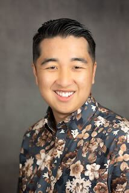

Brandon Imai
"It always seems impossible until it's done" - Nelson Mandela
Hi! My name is Brandon Imai and I am a fourth-year Computer Science major at UC San Diego. I am passionate about how our decisions as Software Engineers affect the world and our users. In my free time, I enjoy watching sports, bowling, umpiring, and eating great food with my friends.
General Info
- School: UC San Diego
- Degree: Bachelor of Science - Computer Science
- Past Experiences:
- Software Engineering Intern - Northrop Grumman Corporation
- VP External - HKN Kappa Psi Chapter
- President - UC San Diego Club Baseball Team